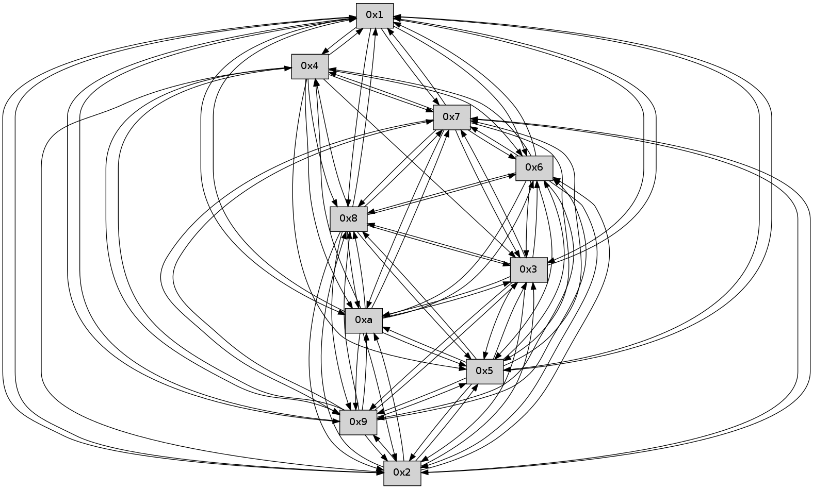

>> << IDX [start] -100 -25 -5 +0 +5 +25 +100 [285.003612041]
 Previous packets
----------------------------------------------------------------------
280.214835 beacon01(faad) #0 coord=01,02,03,04,05,06,07,0a,09,08 cycle=688.0ms assoc
-- color-indic=0 64 e0 73
280.224819 beacon02(faad) #0 coord=01,02,03,04,05,06,07,0a,09,08 cycle=688.0ms assoc 64 73 42
280.234817 beacon03(faad) #0 coord=01,02,03,04,05,06,07,0a,09,08 cycle=688.0ms assoc 64 09 0f
280.244818 beacon04(faad) #0 coord=01,02,03,04,05,06,07,0a,09,08 cycle=688.0ms assoc 64 7e e5
280.254818 beacon05(faad) #0 coord=01,02,03,04,05,06,07,0a,09,08 cycle=688.0ms assoc 64 04 a8
280.264819 beacon06(faad) #0 coord=01,02,03,04,05,06,07,0a,09,08 cycle=688.0ms assoc 64 8a 7f
280.274819 beacon07(faad) #0 coord=01,02,03,04,05,06,07,0a,09,08 cycle=688.0ms assoc 64 f0 32
280.284824 beacon0a(faad) #0 coord=01,02,03,04,05,06,07,0a,09,08 cycle=688.0ms assoc 64 81 39
280.294824 beacon09(faad) #0 coord=01,02,03,04,05,06,07,0a,09,08 cycle=688.0ms assoc 64 0f ee
280.304823 beacon08(faad) #0 coord=01,02,03,04,05,06,07,0a,09,08 cycle=688.0ms assoc 64 75 a3
280.316308 [Hello(9): seq=126 sym=5,2,3,4,7,6,8,10,1 sysInfo= stat=5:14,0,0,0/2:15,0,0,0/3:15,0,0,0/4:5,0,0,0/7:15,0,0,0/6:7,0,0,0/8:12,0,0,0/10:10,0,0,0/1:2,0,0,0]
280.318824 [Hello(7): seq=183 sym=2,3,5,6,4,8,9,10,1 sysInfo= stat=2:6,0,0,0/3:6,0,0,0/5:3,0,0,0/6:5,0,0,0/4:2,0,0,0/8:13,0,0,0/9:15,0,0,0/10:13,0,0,0/1:9,0,0,0]
280.323756 [Hello(8): seq=126 sym=5,2,3,4,7,6,9,10,1 sysInfo= stat=5:8,0,0,0/2:8,0,0,0/3:8,0,0,0/4:6,0,0,0/7:1,0,0,0/6:4,0,0,0/9:7,0,0,0/10:5,0,0,0/1:11,0,0,0]
280.326180 [Hello(10): seq=115 sym=6,3,2,5,9,8,7,4,1 sysInfo= stat=6:2,0,0,0/3:9,0,0,0/2:7,0,0,0/5:9,0,0,0/9:3,0,0,0/8:12,0,0,0/7:6,0,0,0/4:15,0,0,0/1:14,0,0,0]
280.330328 [Hello(6): seq=183 sym=2,3,5,4,7,9,8,10,1 sysInfo= stat=2:11,0,0,0/3:8,0,0,0/5:15,0,0,0/4:9,0,0,0/7:12,0,0,0/9:4,0,0,0/8:3,0,0,0/10:1,0,0,0/1:2,0,0,0]
----------------------------------------------------------------------
281.002967 beacon01(faad) #0 coord=01,02,03,04,05,06,07,0a,09,08 cycle=688.0ms assoc
-- color-indic=0 64 24 7d
281.012950 beacon02(faad) #0 coord=01,02,03,04,05,06,07,0a,09,08 cycle=688.0ms assoc 64 b7 4c
281.022950 beacon03(faad) #0 coord=01,02,03,04,05,06,07,0a,09,08 cycle=688.0ms assoc 64 cd 01
281.032950 beacon04(faad) #0 coord=01,02,03,04,05,06,07,0a,09,08 cycle=688.0ms assoc 64 ba eb
281.042950 beacon05(faad) #0 coord=01,02,03,04,05,06,07,0a,09,08 cycle=688.0ms assoc 64 c0 a6
281.052949 beacon06(faad) #0 coord=01,02,03,04,05,06,07,0a,09,08 cycle=688.0ms assoc 64 4e 71
281.062950 beacon07(faad) #0 coord=01,02,03,04,05,06,07,0a,09,08 cycle=688.0ms assoc 64 34 3c
281.072954 beacon0a(faad) #0 coord=01,02,03,04,05,06,07,0a,09,08 cycle=688.0ms assoc 64 45 37
281.082955 beacon09(faad) #0 coord=01,02,03,04,05,06,07,0a,09,08 cycle=688.0ms assoc 64 cb e0
281.092957 beacon08(faad) #0 coord=01,02,03,04,05,06,07,0a,09,08 cycle=688.0ms assoc 64 b1 ad
281.104746 [Hello(3): seq=184 sym=5,7,6,4,2,8,9,10,1 sysInfo= stat=5:5,0,0,0/7:3,0,0,0/6:14,0,0,0/4:15,0,0,0/2:6,0,0,0/8:5,0,0,0/9:13,0,0,0/10:3,0,0,0/1:3,0,0,0]
281.108402 [Hello(4): seq=184 sym=5,7,6,2,3,9,8,10,1 sysInfo= stat=5:3,0,0,0/7:8,0,0,0/6:14,0,0,0/2:7,0,0,0/3:10,0,0,0/9:0,0,0,0/8:15,0,0,0/10:13,0,0,0/1:7,0,0,0]
281.114914 [Hello(2): seq=181 sym=5,7,6,3,9,8,10,1 sysInfo= stat=5:0,0,0,0/7:13,0,0,0/6:13,0,0,0/3:1,0,0,0/9:15,0,0,0/8:13,0,0,0/10:9,0,0,0/1:1,0,0,0]
281.118758 [Hello(5): seq=184 sym=7,6,3,1,9,8,10,2 sysInfo= stat=7:4,0,0,0/6:1,0,0,0/3:9,0,0,0/1:5,0,0,0/9:15,0,0,0/8:8,0,0,0/10:12,0,0,0/2:14,0,0,0]
----------------------------------------------------------------------
281.791099 beacon01(faad) #0 coord=01,02,03,04,05,06,07,0a,09,08 cycle=688.0ms assoc
-- color-indic=0 64 98 78
281.801083 beacon02(faad) #0 coord=01,02,03,04,05,06,07,0a,09,08 cycle=688.0ms assoc 64 0b 49
281.811083 beacon03(faad) #0 coord=01,02,03,04,05,06,07,0a,09,08 cycle=688.0ms assoc 64 71 04
281.821082 beacon04(faad) #0 coord=01,02,03,04,05,06,07,0a,09,08 cycle=688.0ms assoc 64 06 ee
281.831083 beacon05(faad) #0 coord=01,02,03,04,05,06,07,0a,09,08 cycle=688.0ms assoc 64 7c a3
281.841081 beacon06(faad) #0 coord=01,02,03,04,05,06,07,0a,09,08 cycle=688.0ms assoc 64 f2 74
281.851083 beacon07(faad) #0 coord=01,02,03,04,05,06,07,0a,09,08 cycle=688.0ms assoc 64 88 39
281.861087 beacon0a(faad) #0 coord=01,02,03,04,05,06,07,0a,09,08 cycle=688.0ms assoc 64 f9 32
281.871088 beacon09(faad) #0 coord=01,02,03,04,05,06,07,0a,09,08 cycle=688.0ms assoc 64 77 e5
281.881087 beacon08(faad) #0 coord=01,02,03,04,05,06,07,0a,09,08 cycle=688.0ms assoc 64 0d a8
281.893191 [Hello(7): seq=184 sym=2,3,5,6,4,8,9,10,1 sysInfo= stat=2:7,0,0,0/3:7,0,0,0/5:4,0,0,0/6:6,0,0,0/4:2,0,0,0/8:14,0,0,0/9:15,0,0,0/10:13,0,0,0/1:9,0,0,0]
281.895894 [Hello(9): seq=127 sym=5,2,3,4,7,6,8,10,1 sysInfo= stat=5:15,0,0,0/2:0,0,0,0/3:0,0,0,0/4:6,0,0,0/7:0,0,0,0/6:8,0,0,0/8:13,0,0,0/10:10,0,0,0/1:2,0,0,0]
281.898910 [Hello(6): seq=184 sym=2,3,5,4,7,9,8,10,1 sysInfo= stat=2:12,0,0,0/3:9,0,0,0/5:0,0,0,0/4:10,0,0,0/7:12,0,0,0/9:4,0,0,0/8:3,0,0,0/10:1,0,0,0/1:2,0,0,0]
281.901482 [Hello(10): seq=116 sym=6,3,2,5,9,8,7,4,1 sysInfo= stat=6:3,0,0,0/3:10,0,0,0/2:8,0,0,0/5:10,0,0,0/9:3,0,0,0/8:12,0,0,0/7:6,0,0,0/4:15,0,0,0/1:14,0,0,0]
281.907551 [Hello(8): seq=127 sym=5,2,3,4,7,6,9,10,1 sysInfo= stat=5:9,0,0,0/2:9,0,0,0/3:9,0,0,0/4:6,0,0,0/7:1,0,0,0/6:5,0,0,0/9:7,0,0,0/10:6,0,0,0/1:11,0,0,0]
----------------------------------------------------------------------
282.579230 beacon01(faad) #0 coord=01,02,03,04,05,06,07,0a,09,08 cycle=688.0ms assoc
-- color-indic=0 64 4c 4d
282.589213 beacon02(faad) #0 coord=01,02,03,04,05,06,07,0a,09,08 cycle=688.0ms assoc 64 df 7c
282.599213 beacon03(faad) #0 coord=01,02,03,04,05,06,07,0a,09,08 cycle=688.0ms assoc 64 a5 31
282.609212 beacon04(faad) #0 coord=01,02,03,04,05,06,07,0a,09,08 cycle=688.0ms assoc 64 d2 db
282.619213 beacon05(faad) #0 coord=01,02,03,04,05,06,07,0a,09,08 cycle=688.0ms assoc 64 a8 96
282.629214 beacon06(faad) #0 coord=01,02,03,04,05,06,07,0a,09,08 cycle=688.0ms assoc 64 26 41
282.639214 beacon07(faad) #0 coord=01,02,03,04,05,06,07,0a,09,08 cycle=688.0ms assoc 64 5c 0c
282.649219 beacon0a(faad) #0 coord=01,02,03,04,05,06,07,0a,09,08 cycle=688.0ms assoc 64 2d 07
282.659220 beacon09(faad) #0 coord=01,02,03,04,05,06,07,0a,09,08 cycle=688.0ms assoc 64 a3 d0
282.669218 beacon08(faad) #0 coord=01,02,03,04,05,06,07,0a,09,08 cycle=688.0ms assoc 64 d9 9d
282.680395 [Hello(3): seq=185 sym=5,7,6,2,8,9,10,1 sysInfo= stat=5:6,0,0,0/7:4,0,0,0/6:15,0,0,0/2:7,0,0,0/8:6,0,0,0/9:14,0,0,0/10:4,0,0,0/1:3,0,0,0]
282.683714 [Hello(2): seq=182 sym=5,7,6,3,9,8,10,1 sysInfo= stat=5:1,0,0,0/7:14,0,0,0/6:14,0,0,0/3:1,0,0,0/9:0,0,0,0/8:14,0,0,0/10:10,0,0,0/1:1,0,0,0]
282.692296 [Hello(4): seq=185 sym=5,7,6,2,3,9,8,10,1 sysInfo= stat=5:4,0,0,0/7:9,0,0,0/6:15,0,0,0/2:8,0,0,0/3:10,0,0,0/9:1,0,0,0/8:0,0,0,0/10:14,0,0,0/1:7,0,0,0]
282.696443 [Hello(5): seq=185 sym=7,6,3,1,9,8,10,2 sysInfo= stat=7:5,0,0,0/6:2,0,0,0/3:9,0,0,0/1:5,0,0,0/9:0,0,0,0/8:9,0,0,0/10:13,0,0,0/2:14,0,0,0]
----------------------------------------------------------------------
283.367363 beacon01(faad) #0 coord=01,02,03,04,05,06,07,0a,09,08 cycle=688.0ms assoc
-- color-indic=0 64 f0 48
283.377345 beacon02(faad) #0 coord=01,02,03,04,05,06,07,0a,09,08 cycle=688.0ms assoc 64 63 79
283.387345 beacon03(faad) #0 coord=01,02,03,04,05,06,07,0a,09,08 cycle=688.0ms assoc 64 19 34
283.397346 beacon04(faad) #0 coord=01,02,03,04,05,06,07,0a,09,08 cycle=688.0ms assoc 64 6e de
283.407347 beacon05(faad) #0 coord=01,02,03,04,05,06,07,0a,09,08 cycle=688.0ms assoc 64 14 93
283.417346 beacon06(faad) #0 coord=01,02,03,04,05,06,07,0a,09,08 cycle=688.0ms assoc 64 9a 44
283.427347 beacon07(faad) #0 coord=01,02,03,04,05,06,07,0a,09,08 cycle=688.0ms assoc 64 e0 09
283.437351 beacon0a(faad) #0 coord=01,02,03,04,05,06,07,0a,09,08 cycle=688.0ms assoc 64 91 02
283.447352 beacon09(faad) #0 coord=01,02,03,04,05,06,07,0a,09,08 cycle=688.0ms assoc 64 1f d5
283.457352 beacon08(faad) #0 coord=01,02,03,04,05,06,07,0a,09,08 cycle=688.0ms assoc 64 65 98
283.468815 [Hello(8): seq=128 sym=5,2,3,4,7,6,9,10,1 sysInfo= stat=5:10,0,0,0/2:10,0,0,0/3:10,0,0,0/4:6,0,0,0/7:1,0,0,0/6:5,0,0,0/9:7,0,0,0/10:6,0,0,0/1:12,0,0,0]
283.471332 [Hello(6): seq=185 sym=2,3,5,4,7,9,8,10,1 sysInfo= stat=2:13,0,0,0/3:10,0,0,0/5:1,0,0,0/4:10,0,0,0/7:12,0,0,0/9:4,0,0,0/8:4,0,0,0/10:2,0,0,0/1:2,0,0,0]
283.475042 [Hello(9): seq=128 sym=5,2,3,4,7,6,8,10,1 sysInfo= stat=5:0,0,0,0/2:1,0,0,0/3:1,0,0,0/4:6,0,0,0/7:0,0,0,0/6:9,0,0,0/8:14,0,0,0/10:11,0,0,0/1:2,0,0,0]
283.477741 [Hello(10): seq=117 sym=6,3,2,5,9,8,7,4,1 sysInfo= stat=6:3,0,0,0/3:11,0,0,0/2:9,0,0,0/5:11,0,0,0/9:3,0,0,0/8:13,0,0,0/7:6,0,0,0/4:15,0,0,0/1:15,0,0,0]
283.481096 [Hello(7): seq=185 sym=2,3,5,6,4,8,9,10,1 sysInfo= stat=2:8,0,0,0/3:8,0,0,0/5:5,0,0,0/6:7,0,0,0/4:2,0,0,0/8:15,0,0,0/9:0,0,0,0/10:14,0,0,0/1:10,0,0,0]
----------------------------------------------------------------------
284.155496 beacon01(faad) #0 coord=01,02,03,04,05,06,07,0a,09,08 cycle=688.0ms assoc
-- color-indic=0 64 34 46
284.165479 beacon02(faad) #0 coord=01,02,03,04,05,06,07,0a,09,08 cycle=688.0ms assoc 64 a7 77
284.175477 beacon03(faad) #0 coord=01,02,03,04,05,06,07,0a,09,08 cycle=688.0ms assoc 64 dd 3a
284.185480 beacon04(faad) #0 coord=01,02,03,04,05,06,07,0a,09,08 cycle=688.0ms assoc 64 aa d0
284.195479 beacon05(faad) #0 coord=01,02,03,04,05,06,07,0a,09,08 cycle=688.0ms assoc 64 d0 9d
284.205479 beacon06(faad) #0 coord=01,02,03,04,05,06,07,0a,09,08 cycle=688.0ms assoc 64 5e 4a
284.215480 beacon07(faad) #0 coord=01,02,03,04,05,06,07,0a,09,08 cycle=688.0ms assoc 64 24 07
284.225485 beacon0a(faad) #0 coord=01,02,03,04,05,06,07,0a,09,08 cycle=688.0ms assoc 64 55 0c
284.235485 beacon09(faad) #0 coord=01,02,03,04,05,06,07,0a,09,08 cycle=688.0ms assoc 64 db db
284.245483 beacon08(faad) #0 coord=01,02,03,04,05,06,07,0a,09,08 cycle=688.0ms assoc 64 a1 96
284.257255 [Hello(4): seq=186 sym=5,7,6,2,3,9,8,10,1 sysInfo= stat=5:5,0,0,0/7:10,0,0,0/6:0,0,0,0/2:8,0,0,0/3:10,0,0,0/9:2,0,0,0/8:1,0,0,0/10:15,0,0,0/1:7,0,0,0]
284.260724 [Hello(5): seq=186 sym=7,6,3,1,9,8,10,2 sysInfo= stat=7:6,0,0,0/6:3,0,0,0/3:9,0,0,0/1:5,0,0,0/9:1,0,0,0/8:10,0,0,0/10:14,0,0,0/2:14,0,0,0]
284.263290 [Hello(2): seq=183 sym=5,7,6,3,9,8,10,1 sysInfo= stat=5:2,0,0,0/7:15,0,0,0/6:15,0,0,0/3:1,0,0,0/9:1,0,0,0/8:15,0,0,0/10:11,0,0,0/1:1,0,0,0]
284.269833 [Hello(3): seq=186 sym=5,7,6,2,8,9,10,1 sysInfo= stat=5:7,0,0,0/7:5,0,0,0/6:0,0,0,0/2:8,0,0,0/8:7,0,0,0/9:15,0,0,0/10:5,0,0,0/1:4,0,0,0]
----------------------------------------------------------------------
284.943629 beacon01(faad) #0 coord=01,02,03,04,05,06,07,0a,09,08 cycle=688.0ms assoc
-- color-indic=0 64 88 43
284.953611 beacon02(faad) #0 coord=01,02,03,04,05,06,07,0a,09,08 cycle=688.0ms assoc 64 1b 72
284.963610 beacon03(faad) #0 coord=01,02,03,04,05,06,07,0a,09,08 cycle=688.0ms assoc 64 61 3f
284.973612 beacon04(faad) #0 coord=01,02,03,04,05,06,07,0a,09,08 cycle=688.0ms assoc 64 16 d5
284.983612 beacon05(faad) #0 coord=01,02,03,04,05,06,07,0a,09,08 cycle=688.0ms assoc 64 6c 98
284.993611 beacon06(faad) #0 coord=01,02,03,04,05,06,07,0a,09,08 cycle=688.0ms assoc 64 e2 4f